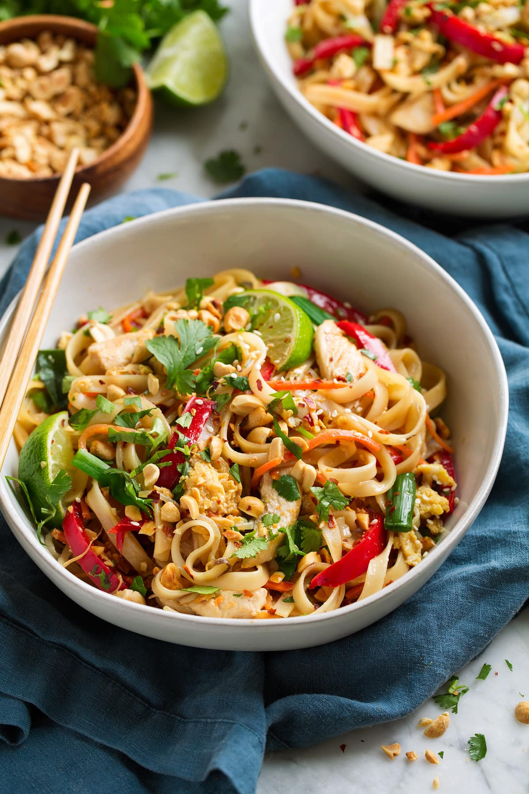

Pad Thai

Pad Thai is a stir-fried rice noodle dish commonly served as a street food in Thailand. It is typically made with rice noodles, shrips, peanuts, a scrambled egg, and bean sprouts. The ingedients are fried in a wok.
Ingredients
- 1 package of rice noodles
- 2 tablespoons of butter
- 1 pound of boneless, skinless chicken breast halves. cut into bite-sized pieces
- 1/4 cup of vegetable oil
- 4 eggs
- 3 tablespoons of white sugar
- 2 tablespoons of fish sauce
- 1 tablespoon of white wine vinegar
- 1/8 tablespoon of crushed red pepper
- 2 cups of bean sprouts
- 3 green onions, chopped
- 1/4 cup of crushed peanuts
- 1 lemon, cut into wedges
Steps
- Gather all ingredients
- Soak rice noodles in cold water until soft, 30 to 50 minutes. Drain and set aside
- Meanwhile, heat butter in awok; add chicken and sauté until browned. Remove chicken and set aside.
- Heat oil in the wok over medium-high heat. Crack eggs into a hot oil and cook until firm. Stir chicken and cook for 5 minutes
- Add softened noodles, sugar, fish sauce, vinegar, and red pepper; mix well until noodles are tender. Adjust seasoning to taste.
- Stir bean sprouts into wok and cook for 3 minutes.
- Serve topped with green onions, crushed peanuts, and a wedge of lemon.
back